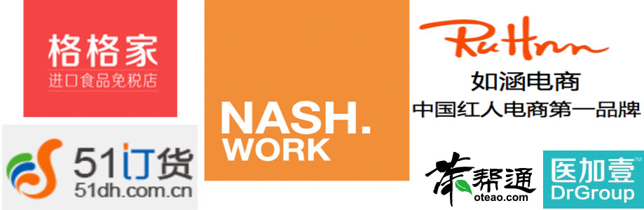

公司理念
- 冲盈资本是一家成立于2015年的新型精品融资顾问机构，专注于为互联网创业者提供创业伙伴式的融资服务。基于定制化的工作方法，我们以客户企业内部智库的视角，深入到企业的成长路径和运营细节中，提供兼具企业智库与投融资的多样化服务。
- 截止至今，我们已协助30余家创业企业完成融资，融资金额超过8亿美金，行业涵盖电商、供应链、物流、医疗、企业服务等多个细分领域。

团队介绍
王翌淼
♦ 冲盈资本联合创始人，深耕成长期企业，对电商、供应链及消费升级等
领域投融资有多年实操经验，服务客户包括达达、小麦公社、折800、
一米鲜、如涵等
♦ 曾任京东投资部总监，参与完成腾讯入股京东，穿衣助手等项目
♦ 曾供职于华兴资本，深度参与电 商领域多起核心项目融资，服务客户
包括美丽说、聚美优品等
祁 萌
♦ 冲盈资本联合创始人，专注于医疗、企业服务等早期互联网创业领域，
服务客户包括医加壹、杭州康晟(掌上糖医)、茶帮通、如涵、1箱子、法
大大、云巴等
♦ 曾供职于以太资本、小饭桌创业课堂等早期融资顾问机构；曾任虎嗅
网高级编辑，有深厚媒体经验和业内资源
♦ 北京大学德语文学学士，德国不来梅大学文学硕士
何 楠
♦ 曾供职于以太资本，专注电商、消费升级、共享经济等板块成长期企
业融资服务，服务客户包括每日优鲜、格格家等
♦ 曾供职于复星集团，参与多起娱乐内容、移动医疗领域PE投资项目；
曾任职于腾讯个人云平台(产品经理)
♦ 浙江大学金融学学士，北京大学经济学硕士
乔 戈
♦ 曾担任BDA投资分析师，为全球私募基金和对冲基金提供第三方
研究和尽职调查，服务行业包括社交媒体、互联网金融、O2O、
共享经济等
♦ 曾担任纽约 OnDeck ( NYSE:ONDK ) Capitial Market 部门
Portfolio Manager
♦ 美国哥伦比亚大学统计学硕士
加入我们
公司地址：北京市朝阳区建国路93号院万达广场3号楼
联系我们：BP@everingcap.com
服务提供
♦ 深入细节的融资辅导
全面评估客户的商业模式与运营指标，有针对性地思索并总结企业融资过程中的可能遇到的问题，对潜在投资者的每个问题都准备好辅导和答案。
基于冲盈资本深入接触众多成熟的一流创业者、投资机构积累的商业经验，提前为相对早期的创业者提供充分的培训，整理出更适用于和投资者对话且更加符合商业逻辑的答案。
♦ 沟通资本市场的发言人
在融资过程中，我们会是企业的“发言人”通过全面的数据过滤和分析，做到对企业的运营细节了如指掌，并可以代表企业解答投资者提出的数据和业务层面问题，为企业节省大量与资本市场初步沟通的时间和精力。
在融资过程中我们会指导创业者什么时候以及如何去传递信息，传递怎样的信息，以期在资本市场上取得对创业者最有利的战略地位。
♦ 灵活的企业外脑
我们会深度的思考业务本质，对竞品、产业链上下游等关联方保持非常高的敏感度，给公司提供创造性的角度和观点
♦ 精准的投资人匹配
基于多年的项目经验，我们与绝大多数风险投资机构建立了深厚的合作关系，并对投资机构内部的内部情况建立了充分Know-how，可以帮助企业精准地定位投资机构中中最合适的潜在投资人，也能和绝大部分PE基金关键决策人直接对话